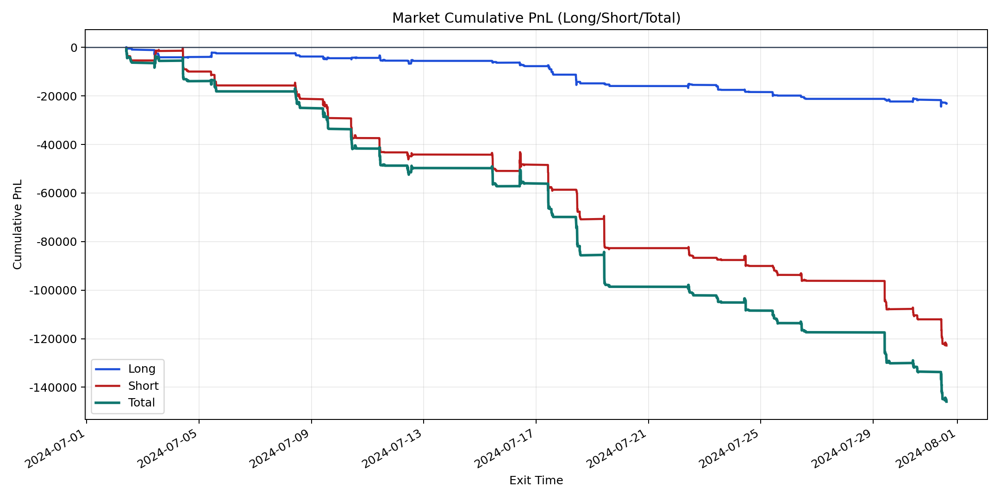
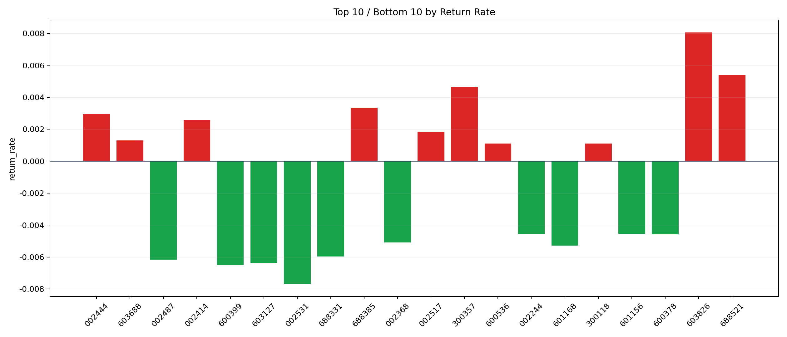

| repo_root | /home/haoranyou/data/output/dynamic_AUM_TAKER_index500 |
|---|---|
| period_months | 1 |
| period_label | 2024-07-02_to_2024-07-31 |
| start_time | 2024-07-02 09:48:37 |
| end_time | 2024-07-31 14:41:07 |
| n_trades | 4080 |
| n_symbols | 83 |
| total_pnl | -145942.67020000078 |
| long_total_pnl | -23112.65379999981 |
| short_total_pnl | -122830.016400001 |
| total_entry_notional | 72234006.0 |
| long_entry_notional | 19901664.0 |
| short_entry_notional | 52332342.0 |
| total_return_rate | -0.0020204150133941176 |
| long_return_rate | -0.0011613427801815874 |
| short_return_rate | -0.0023471148377040146 |
| top_symbols_by_return | ["603826", "688521", "300357", "688385", "002444", "002414", "002517", "603688", "600536", "300118"] |
| bottom_symbols_by_return | ["002531", "600399", "603127", "002487", "688331", "601168", "002368", "600378", "002244", "601156"] |

